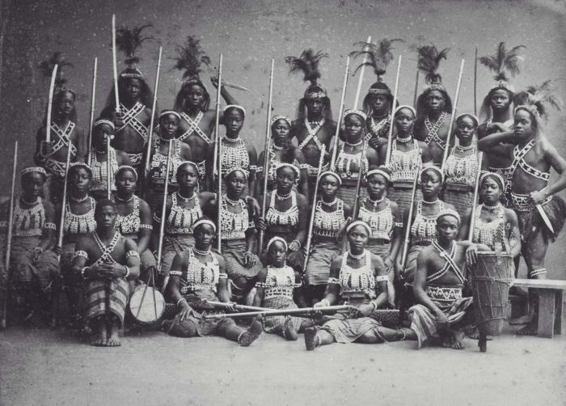
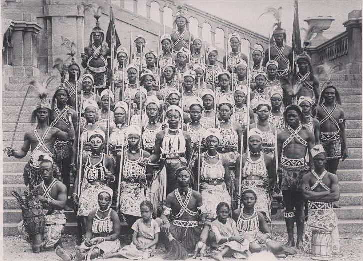
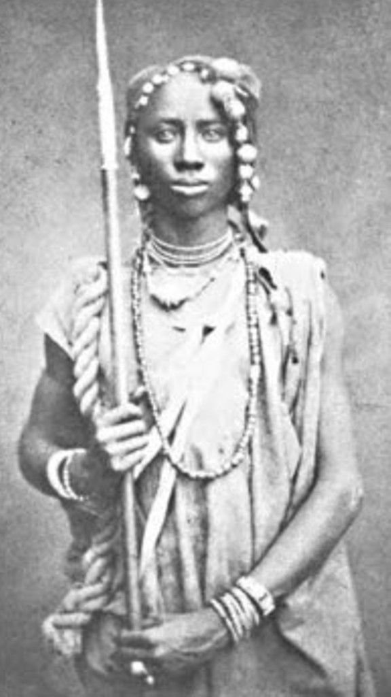
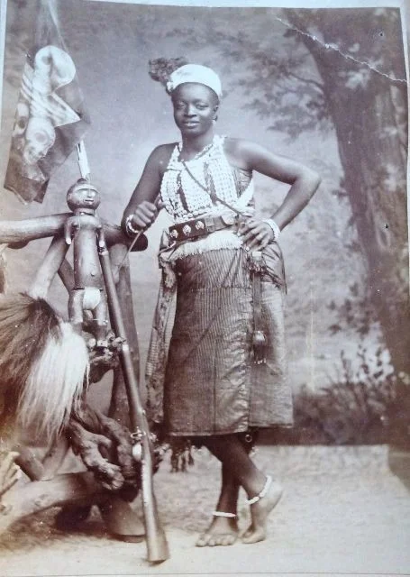
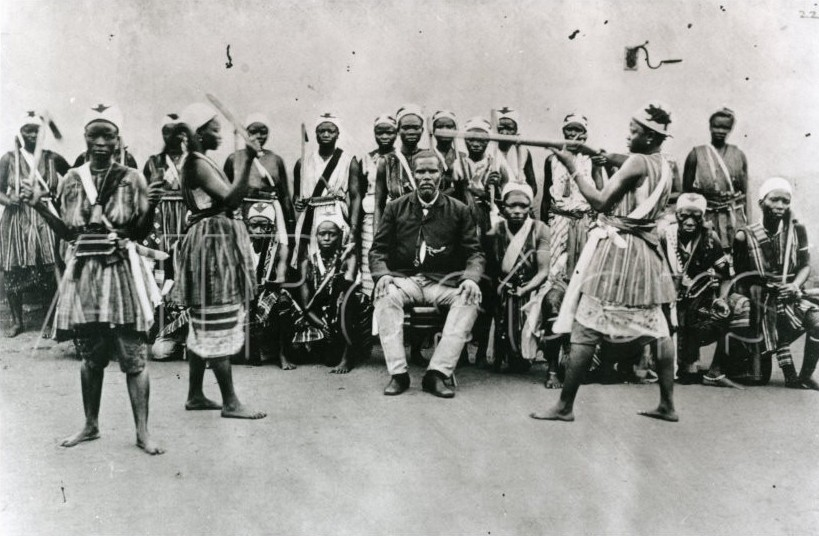
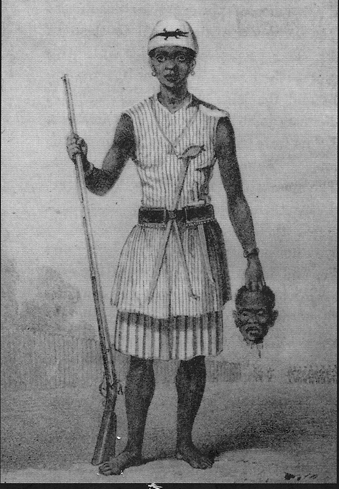
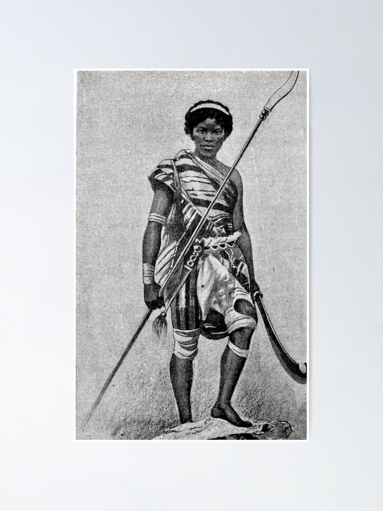

The Dora Milaje (Black Panther’s all Female Army) are reminiscent of a real life army in African history during the 17th-19th century West Africa, The Mino warriors. They were a fierce all female military squad in the kingdom of Dahomey, West Africa (modern day Benin), that was the center of a highly organized military force the kingdom used to expand its territory.
Dahomey Amazons Biography
|  |  |
The Mino were nicknamed the Dahomey Amazons by the first Europeans who encountered them, likening them to the Greek mythology Amazon warriors depicted in the film Wonder Woman. However, amongst their own, these women were known as the N’Nonmiton or Mino, which translates to Our mothers. The Mino originally started as corps of elephant hunters and they became more militaristic over time due to having their impressive combat style recognized by successive kings. Recruitment into this army was believed to be as young as 8 years old and included volunteers fleeing poverty, the burden of marriage, and “disobedient” wives and daughters, whose husbands and fathers complained about their behavior to the king. Once a Mino, the women took a vow of celibacy; they believed, having sex and getting pregnant would deter them from fighting. The penalty for men who dared to touch a Mino was death.
|  |  |
Origin
Houegbadja (who ruled from 1645 to 1685), the third King of Dahomey, is said to have originally started the group which would become the Amazons as a corps of elephant hunters called the gbeto. Houegbadja’s son King Agaja (ruling from 1708 to 1732) established a female bodyguard armed with muskets. European merchants recorded their presence. According to tradition, Agaja developed the bodyguard into a militia and successfully used them in Dahomey’s defeat of the neighbouring kingdom of Savi in 1727. The group of female warriors was referred to as Mino, meaning “Our Mothers” in the Fon language, by the male army of Dahomey. Other sources contest that King Agaja’s older sister Queen Hangbe was the ruler to establish the units, however some contest if Queen Hangbe actually existed. From the time of King Ghezo (ruling from 1818 to 1858), Dahomey became increasingly militaristic. Ghezo placed great importance on the army, increasing its budget and formalizing its structure from ceremonial to a serious military. While European narratives refer to the women soldiers as “Amazons”, they called themselves ahosi (king’s wives) or Mino (our mothers). Europeans exchanged goods such as knives, bayonets, firearms and fabrics for prisoners that the Dahomey captured during wars and raids.
Combat and Structure
The women soldiers were rigorously trained and given uniforms. By the mid-19th century, they numbered between 1,000 and 6,000 women, about a third of the entire Dahomey army, according to reports written by visitors. These documented reports also indicated that the women soldiers suffered several defeats. The women soldiers were said to be structured in parallel with the army as a whole, with a center wing (the king’s bodyguards) flanked on both sides, each under separate commanders. Some accounts note that each male soldier had a female warrior counterpart. In an 1849/50 account by an Englishman, it was documented that the women that had three stripes of whitewash around each leg, were honored with marks of distinction. 
The women’s army consisted of a number of regiments: huntresses, riflewomen, reapers, archers, and gunners. Each regiment had different uniforms, weapons, and commanders.
|  |  |
In the latter period, the Dahomean female warriors were armed with Winchester rifles, clubs and knives. Units were under female command. An 1851 published translation of a war chant of the women claims the warriors would chant, “a[s] the blacksmith takes an iron bar and by fire changes its fashion so have we changed our nature. We are no longer women, we are men.”
The Dahomey kingdom finally acquiesced to European colonization with the territory eventually falling under the French and the Mino being disbanded.
The Mino Army is an incredible example of women in traditional African society who played a unique role in building their kingdom. There were able to rise to positions of command and influence and for some gain an escape from the drudgery of domestication. They could even become wealthy as single independent women, living in the King’s compound of course, but well supplied with food, tobacco, and alcohol at their disposal.